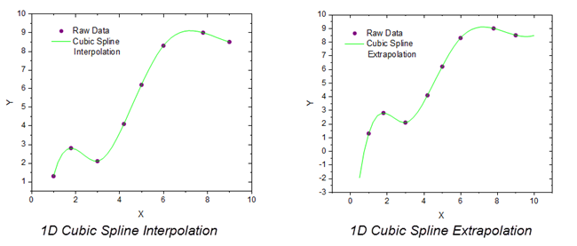
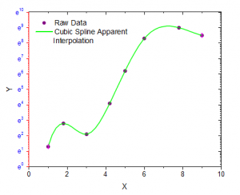

Weitere relevante Videos: Origin VT-0010 Interpolation
Weitere relevante Videos: Origin VT-0010 Interpolation
 Weitere relevante Videos: Origin VT-0010 Interpolation
Weitere relevante Videos: Origin VT-0010 Interpolation

Interpolation/Extrapolation ist die Methode zum Schätzen und Erstellen neuer Datenpunkte aus einem diskreten Satz von bekannten Datenpunkten. Diese Funktion erzeugt eine einheitliche, linear verteilte, interpolierte Kurve durch vier verschiedene Methoden: Linear, Kubische Spline und Kubische B-Spline und Akima Spline.
In Origin unterstützt das Hilfsmittel der Interpolation auch die Scheinbare Interpolation, so dass es auch Daten entsprechend der aktuellen Achseneinstellungen interpolieren kann.

Der Dialog ruft die X-Funktion interp1xy auf, um die Berechnung der Interpolation/Extrapolation durchzuführen.
| Neu berechnen |
Bedienelemente zur Neuberechnung der Analyseergebnisse:
Weitere Informationen finden Sie unter Analyseergebnisse neu berechnen. |
|---|---|
| Eingabe |
Legt den zu interpolierenden XY-Bereich fest. Hilfe zum Festlegen von Bereichen finden Sie hier: Eingabedaten festlegen |
| Methode |
Legt die Interpolations-/Extrapolationsmethode fest.
|
| X-Daten erzeugen mit |
Es gibt zwei Optionen zum Erzeugen von X-Daten.
|
| X-Start |
Der erste X-Wert der interpolierten Kurve. Hinweis: Wenn Sie einen absteigenden X-Datensatz erzeugen möchten, können Sie X-Start > X-Ende wählen. |
| X-Ende |
Der letzte X-Wert der interpolierten Kurve. |
| Rand |
Die Randbedingung ist nur bei der Methode der kubischen Spline verfügbar.
|
| Glättungsfaktor |
Ein nicht-negativer Parameter, der die Glätte der interpolierten Kurve in der kubischen B-Spline-Interpolation festlegt. Der Faktor hilft dem Anwender, die Balance zwischen Glättung und Nähe zu steuern. Größere Werte ergeben glattere Kurven. Die Glättung ist nur bei der Methode der kubischen Spline verfügbar. |
| Koeffizienten |
Die Spline-Koeffizienten beim Verwenden der Spline- oder B-Spline-Methode |
| Scheinbare Interpolation |
Diese Option ist nur verfügbar, wenn die Interpolation für ein Diagramm durchgeführt wird. Wenn sie aktiviert ist, wird eine Interpolation mit Hilfe scheinbarer Werte durchgeführt, wenn der Achsenskalierungstyp geändert wurde (zum Beispiel von Linear zu Log10). |
| Ausgabe |
Legt die Ausgabe des XY-Datenbereichs fest. |
Einzelheiten zum Algorithmus finden Sie unter Y von X interpolieren/extrapolieren.
Weitere Einzelheiten finden Sie unter Y von X interpolieren/extrapolieren.